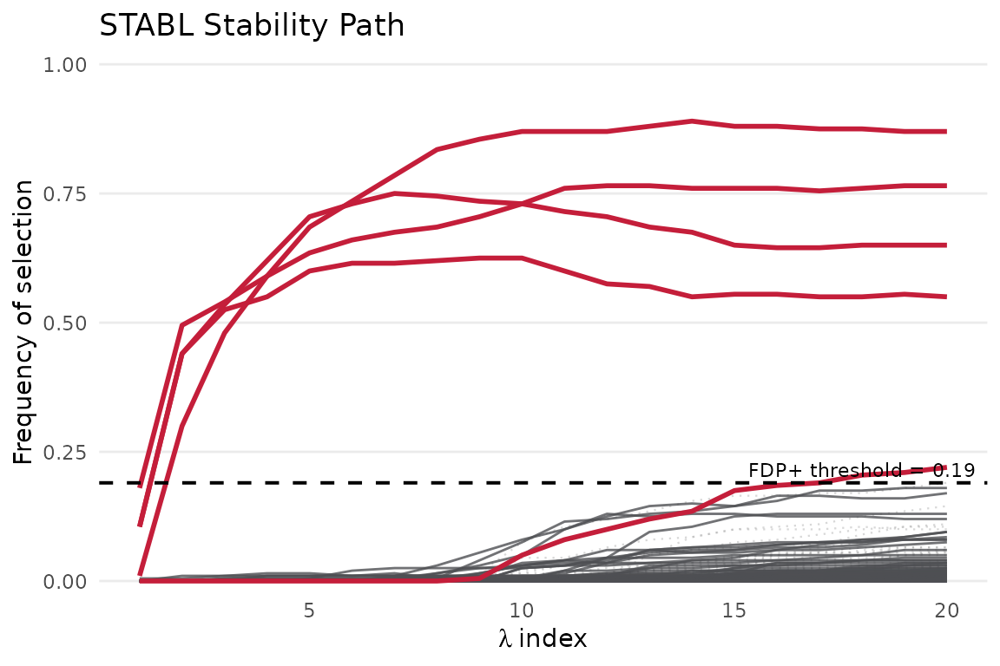
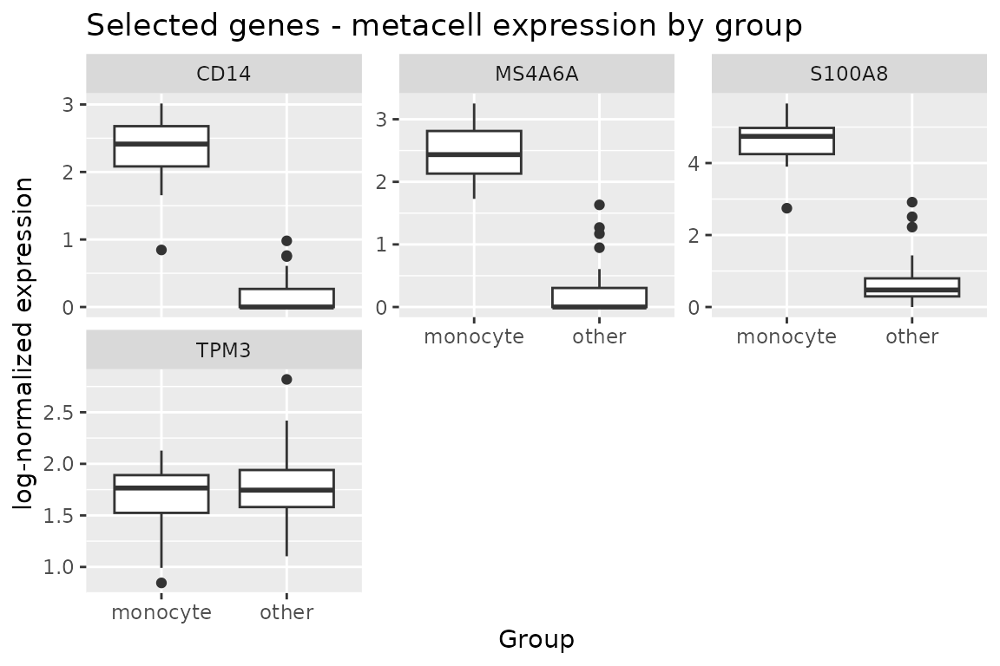

Metacell aggregation: STABL on pooled single-cell expression
Source:vignettes/stablr-metacells.Rmd
stablr-metacells.RmdContents
- 1 Introduction
- 2 Data and normalization
- 3 Building metacells
- 4 Aggregating counts and purity QC
- 5 Selection on metacells
- 6 Reading the selection
- 7 Scope and reproducibility
1 Introduction
Single-cell measurements are sparse and noisy at the individual-cell
level. Metacell methods partition cells into small,
homogeneous neighbourhoods and pool their counts, trading cellular
resolution for a matrix that is smaller, denser, and less zero-inflated
(Baran et al., 2019, Genome Biology 20:206; Persad et al., 2023, Nature
Biotechnology 41:916). Dedicated tools exist — metacell
(Tanay lab) and SEACells — but the pooling concept is simple, and the
STABL step downstream is identical regardless of how the metacells were
built. This vignette therefore constructs metacells with a transparent,
dependency-free greedy k-nearest-neighbour partition and then runs
stabl_fit() on the pooled matrix.
The demonstration uses the public 10x Genomics PBMC 3k data set and asks: which genes reliably distinguish the monocyte lineage from all other cells when the samples are metacells rather than single cells?
2 Data and normalization
The bundled fixture holds the raw counts of 1,200 highly variable
genes for 2,700 cells, plus Louvain cluster labels used as a
demonstration outcome (Section 7). Cluster c9 (11 cells) is
too small for stability resampling and is dropped:
library(stablr)
fixture_dir <- system.file("extdata", "pbmc3k", package = "stablr")
counts <- readRDS(file.path(fixture_dir, "pbmc3k_counts_hvg.rds"))
clusters <- readRDS(file.path(fixture_dir, "pbmc3k_clusters.rds"))
keep <- clusters != "c9"
counts <- counts[keep, ]
clusters <- droplevels(clusters[keep])
lib <- Matrix::rowSums(counts)
xn <- log1p(1e4 * counts / lib) # CP10k + log1p
dim(xn)
#> [1] 2689 12003 Building metacells
We embed the cells in 30 principal components and grow metacells greedily: walking cells in PC1 order, each unassigned cell seeds a metacell with its 24 nearest unassigned neighbours, so every metacell reaches the target size of 25 cells; the final partial neighbourhood is merged into the nearest existing metacells. The partition is deterministic given the seed.
pc <- prcomp(as.matrix(xn), rank. = 30)$x
d <- as.matrix(dist(pc))
n <- nrow(pc)
k <- 25L
assigned <- rep(NA_integer_, n)
mc <- 0L
for (i in order(pc[, 1])) {
if (!is.na(assigned[i])) next
pool <- which(is.na(assigned))
if (length(pool) < 2L * k) break # leave the tail for merging
mc <- mc + 1L
assigned[pool[order(d[i, pool])[1:k]]] <- mc
}
left <- which(is.na(assigned))
for (i in left) {
idx <- which(!is.na(assigned))
assigned[i] <- assigned[idx[which.min(d[i, idx])]]
}
table(table(assigned))
#>
#> 25 26 27 28 29 30 31 32
#> 94 4 2 1 1 1 2 14 Aggregating counts and purity QC
Metacell counts are the sums of member-cell raw counts, re-normalized afterwards. Because the partition is built on expression similarity alone, most metacells are pure with respect to the cluster labels; we score each metacell by its majority label and drop metacells whose majority label covers fewer than 60% of their cells — mixed neighbourhoods at lineage boundaries carry ambiguous signal:
mc_counts <- as.matrix(Matrix::fac2sparse(factor(assigned)) %*% counts)
mc_xn <- log1p(1e4 * mc_counts / rowSums(mc_counts))
maj <- tapply(clusters, assigned, function(v) {
tb <- table(v)
c(names(which.max(tb)), max(tb) / length(v))
})
mc_lab <- factor(vapply(maj, `[`, character(1L), 1L))
purity <- as.numeric(vapply(maj, `[`, character(1L), 2L))
table(mc_lab)
#> mc_lab
#> c1 c2 c3 c4 c5 c6 c7 c8
#> 13 13 22 19 7 6 24 2
sum(purity < 0.6) # impure metacells dropped
#> [1] 15
keepmc <- purity >= 0.65 Selection on metacells
Cluster c4 is the CD14-monocyte cluster (high
CD14/S100A8/LYZ). With ~20 case metacells out of ~90, class imbalance is
real: at a 50% resampling fraction an unstratified resample can draw
fewer than 8 case observations, which glmnet warns about.
stabl_fit()’s stratified bootstrap keeps the class ratio
fixed in every resample:
y <- factor(ifelse(mc_lab[keepmc] == "c4", "monocyte", "other"))
names(y) <- rownames(mc_xn)[keepmc]
table(y)
#> y
#> monocyte other
#> 19 72
fit_mc <- stabl_fit(
x = mc_xn[keepmc, ], y = y, family = "binomial",
lambda_grid = "auto", n_bootstraps = 200L, n_lambda = 20L,
stratify_bootstrap = TRUE, bootstrap_strata = y,
random_state = 42L
)
get_feature_names(fit_mc)
#> [1] "S100A8" "TPM3" "CD14" "MS4A6A" "LGALS2"
plot_stabl_path(fit_mc)
6 Reading the selection
The selected panel is dominated by canonical monocyte markers — S100A8 and CD14 head the list, with MS4A6A and LGALS2 — recovered from only 91 pooled samples. The per-metacell expression of the top genes separates the two groups cleanly:
top_genes <- head(get_feature_names(fit_mc), 4)
# Per-feature group distributions (boxplot_features() was internalized
# in 1.0.0; plain ggplot2 serves the same purpose).
plot_df <- data.frame(
value = as.vector(mc_xn[keepmc, top_genes]),
feature = rep(top_genes, each = sum(keepmc)),
group = factor(rep(y, times = length(top_genes)))
)
print(
ggplot2::ggplot(plot_df, ggplot2::aes(group, value)) +
ggplot2::geom_boxplot() +
ggplot2::facet_wrap(~ feature, scales = "free_y",
ncol = min(3L, length(top_genes))) +
ggplot2::labs(title = "Selected genes - metacell expression by group",
x = "Group", y = "log-normalized expression")
)
Two honest caveats. First, metacells pooled from one donor’s cells
are not independent biological replicates: this selection demonstrates
that the marker structure survives aggregation, not that the panel
generalizes across donors — that requires a cohort design such as
stabl_replication_profile(). Second, aggregation smooths
away rare-cell signal by construction; a lineage present in fewer cells
than the metacell size cannot form a pure metacell.
7 Scope and reproducibility
The cluster labels are computational (Louvain) labels used as a
demonstration outcome, not curated cell types. The fixtures are real
tool outputs regenerated by
data-raw/prepare_pbmc3k_fixtures.py and
data-raw/prepare_pbmc3k_fixtures.R; provenance and SHA-256
checksums ship in inst/extdata/pbmc3k/run_metadata.json and
inst/extdata/pbmc3k/SHA256SUMS.